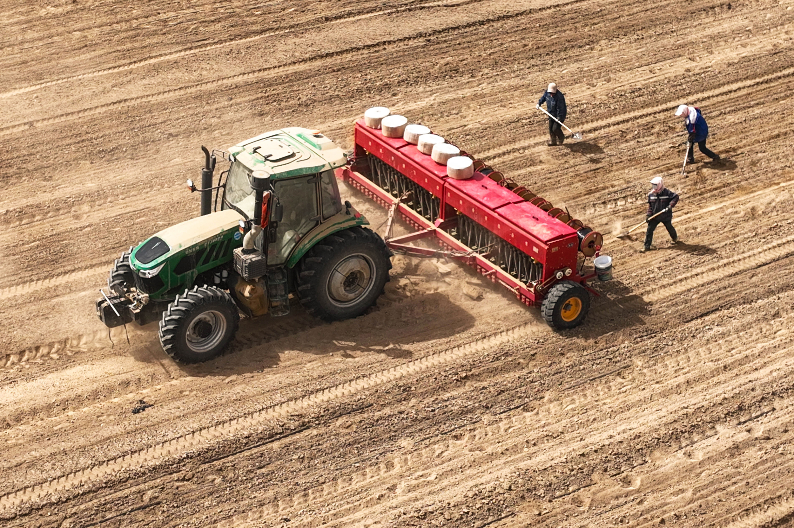
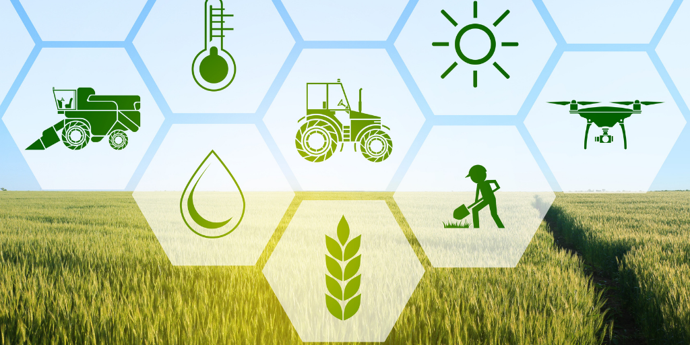
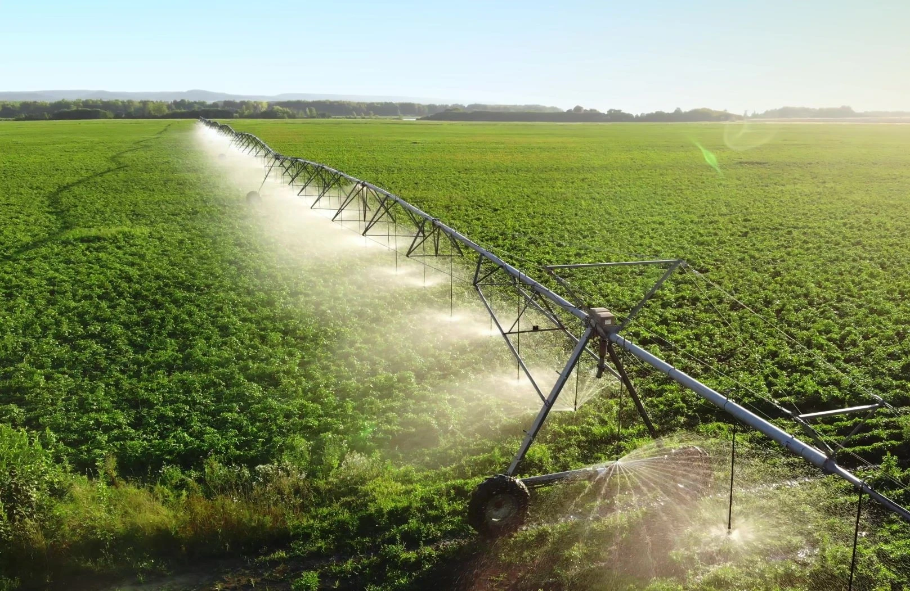

The role of agriculture
Agriculture has played a central role in the development of human civilization for thousands of years. Long before the creation of modern
factories or advanced technology, farming allowed people to settle in one place, build communities, and create stable societies. Even today,
agriculture remains a powerful part of the economy in many countries. But an important question still exists: is agriculture only a traditional
industry, or is it still a key factor in economic growth?
One of the biggest advantages of agriculture is food production. Every country needs a stable supply of food to support its population. A farmer
grows wheat, rice, vegetables, and fruit that later appear in markets, restaurants, and homes. Without agriculture, a nation would depend completely
on imported food, which could become dangerous during an economic crisis or a political conflict.
Agriculture also creates millions of jobs around the world. In many developing countries, a large part of the population works in the agricultural sector.
A family living in a rural village may depend entirely on farming for income. The growth of agriculture can improve living conditions, reduce poverty,
and support local businesses. When farmers earn more money, they often spend it on education, transportation, and healthcare, which helps the entire
economy develop.
Another important role of agriculture is international trade. Countries export agricultural products such as coffee, cotton, cocoa, wheat, and corn
to the global market. Agricultural exports bring foreign currency into the economy and strengthen trade relationships with other nations.
Modern agriculture is no longer based only on physical labor. Today, technology has become an essential part of farming. Farmers use advanced
machinery, drones, irrigation systems, and scientific research to increase production.
Some economists argue that agriculture becomes less important as countries industrialize. They believe technology, finance, and manufacturing create
greater economic growth than farming. Others disagree and claim that agriculture remains the foundation of every economy because people will always
need food to survive.